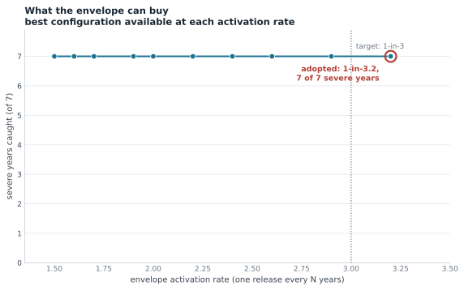

1The trigger
Each window runs on a single forecast source, never a mixture, so one window is one product plus one rule. Inside it, every gauge's forecast flow is compared with its own return-period threshold, and the window fires when enough gauges cross in the same season. At least two must agree, so no single gauge can release the money; never all of them, so one gauge going quiet cannot block it.
Thresholds and activation years from the retrospective simulations. Every product is in the field: GloFAS v5, GloFAS v4, Google and GEOGloWS. Calibrated on 1999-2023, 25 years.
| River | Season | Forecast | Gauge threshold | Gauges that must agree | Would have fired in |
|---|---|---|---|---|---|
| Juba | Gu | Google GRRR | 1-in-5 | 3 of 4 | 2013, 2016, 2018, 2020 |
| Juba | Deyr | Google GRRR | 1-in-5 | 3 of 4 | 2006, 2019, 2023 |
| Shabelle | Gu | Google GRRR | 1-in-5 | 2 of 3 | 2005, 2013, 2016, 2018, 2020 |
| Shabelle | Deyr | GloFAS v5 | 1-in-5 | 2 of 3 | 2006, 2014, 2019, 2023 |
Envelope: 1-in-2.9 (9 of 25 years), catching 8 of the 10 severe years, on GloFAS v5, Google GRRR. Fired with no recorded flood: never. Severe years missed: 2011, 2021.
Thresholds and activation years from the retrospective simulations. Every product is in the field: GloFAS v5, GloFAS v4, Google and GEOGloWS. Calibrated on 1999-2023, 25 years.
| River | Season | Forecast | Gauge threshold | Gauges that must agree | Would have fired in |
|---|---|---|---|---|---|
| Juba | Gu | GloFAS v5 | 1-in-5 | 2 of 4 | 2010, 2016, 2018, 2020 |
| Juba | Deyr | GloFAS v5 | 1-in-4 | 3 of 4 | 2006, 2023 |
| Shabelle | Gu | GloFAS v5 | 1-in-5 | 2 of 3 | 2005, 2010, 2016, 2018, 2020 |
| Shabelle | Deyr | GloFAS v5 | 1-in-5 | 2 of 3 | 2006, 2014, 2019, 2023 |
Envelope: 1-in-2.9 (9 of 25 years), catching 8 of the 10 severe years, on GloFAS v5. Fired with no recorded flood: never. Severe years missed: 2011, 2021.
Thresholds and activation years from the forecast archives themselves, so nothing is inherited from a retrospective. GEOGloWS is out, its forecasts run below its own retrospective; GloFAS v5 is out, it publishes no reforecast.
No selection to show: 8 years of overlapping record (2016-2023) cannot support a 1-in-3 gauge threshold: fitting one needs at least 12 years, and gauge thresholds may not go below 1-in-3.
Thresholds and activation years from the forecast archives themselves, so nothing is inherited from a retrospective. GEOGloWS is out, its forecasts run below its own retrospective; GloFAS v5 is out, it publishes no reforecast. Calibrated on 2003-2023, 21 years.
| River | Season | Forecast | Gauge threshold | Gauges that must agree | Would have fired in |
|---|---|---|---|---|---|
| Juba | Gu | GloFAS v4 | 1-in-3 | 2 of 4 | 2005, 2010, 2013, 2016, 2018, 2020, 2023 |
| Juba | Deyr | GloFAS v4 | 1-in-5 | 3 of 4 | 2015, 2017, 2023 |
| Shabelle | Gu | GloFAS v4 | 1-in-4 | 2 of 3 | 2005, 2010, 2016, 2018 |
| Shabelle | Deyr | GloFAS v4 | 1-in-5 | 2 of 3 | 2010, 2013, 2019, 2020 |
Envelope: 1-in-2.2 (the closest this evidence supports; nothing lands on the target) (10 of 21 years), catching 6 of the 10 severe years, on GloFAS v4. Fired with no recorded flood: never. Severe years missed: 2006, 2011, 2014, 2021.

2Key takeaways
- The gauge record is the reference, and only the reporting gauges can serve a live trigger: 4 on the Juba, 3 on the Shabelle. Thresholds are fitted on post-2000 data, because flooding has been recorded far more often in recent decades.
- A flood is defined by the computed 1-in-3-year level at the gauge, not by an official SWALIM mark: it is frequency-calibrated, so it means the same thing at every gauge, where the official marks range from most years to never. That definition is what the trigger is scored against; the forecast thresholds the trigger actually watches are rarer, and set by the envelope calibration.
- The backtest cannot choose the model, so the forecasts do. 161 different model assignments across the four windows reach the same severe-year coverage at the same activation rate: with 25 years and 10 severe events there is enough freedom in the station count, threshold and vote rule for almost any product to reproduce the same years. The choice therefore rests on skill at lead time, where Google leads the Juba in Gu and GloFAS leads the Shabelle in both seasons.
- The 1-in-3 rate belongs to the envelope, not to each window. Four windows each calibrated to 1-in-3 release the money about every 1.5 years, because they are not independent draws. Calibrated on the union instead, the windows sit at 1-in-5.2 to 1-in-8.7 individually and the envelope lands at 1-in-2.9.
- What that rate buys, and what it costs. It catches 8 of the 10 severe years with no activation in a year that recorded no flood. It does not attempt the more common 1-in-3 floods: at this rate the trigger is for the bad years.
3SWALIM thresholds, events and crossings
SWALIM publishes three risk levels per station: moderate, high and bank full. Each station's 1-in-3-year level is estimated from its own annual maxima and compared against them: where the 1-in-3-year level sits above the moderate mark, that mark is crossed more often than once every three years.
An event is a spell in which the level sits at or above the baseline. The level must stay below it for at least 14 days before a new crossing counts separately, so a brief dip mid-flood does not split one flood in two. Readings stop rising once a gauge reaches bank full, or when a gauge is destroyed mid-flood, so the largest events are understated.


4Model performance against the gauges
POD is the share of gauge-recorded events the product caught, FAR the share of its alarms that were false, both within a 7-day window. The two bases are kept apart: thresholds are fitted on whichever series is being judged.
Each product's retrospective simulation against the events recorded at the gauges, 2002 to 2023, scored at its own 1-in-3 discharge so it is judged on timing rather than on scale.
| Station | Events | GloFAS v5 | GloFAS v4 | Google GRRR | GEOGloWS v2 |
|---|---|---|---|---|---|
| luuq | 9 | 0.44 / 0.50 | 0.22 / 0.71 | 0.44 / 0.43 | 0.11 / 0.88 |
| dollow | 3 | 1.00 / 0.40 | 0.67 / 0.60 | 1.00 / 0.50 | 0.67 / 0.60 |
| bardheere | 4 | 0.50 / 0.75 | 0.25 / 0.86 | 0.50 / 0.75 | 0.25 / 0.88 |
| bualle | 7 | 0.29 / 0.67 | 0.43 / 0.57 | 0.43 / 0.50 | 0.43 / 0.57 |
| belet_weyne | 10 | 0.60 / 0.14 | 0.10 / 0.88 | 0.50 / 0.29 | 0.30 / 0.62 |
| bulo_burti | 9 | 0.44 / 0.43 | 0.11 / 0.88 | 0.33 / 0.57 | 0.44 / 0.50 |
| jowhar | 10 | 0.20 / 0.71 | 0.10 / 0.88 | 0.10 / 0.86 | 0.10 / 0.86 |

The same gauge events, but each product scored on its own forecast archive: the ensemble median at leads 1 to 7, with thresholds fitted on that forecast series rather than inherited from a retrospective. Only two products can be tested this way. GloFAS v5 publishes no reforecast, and GEOGloWS's forecasts run below its own retrospective, so a retrospective-fitted threshold would not transfer.
Read these rates with care: an archive covering 8 years holds only a handful of gauge events, so one hit or miss moves POD a long way. The event count per gauge is in the second column.
| Gauge | Events | GloFAS v4 (2003-2023) | Google GRRR (2016-2023) |
|---|---|---|---|
| luuq | 9 | 0.22 / 0.71 | 0.50 / 0.67 |
| dollow | 3 | 0.67 / 0.60 | 1.00 / 0.33 |
| bardheere | 4 | 0.25 / 0.86 | - |
| bualle | 7 | 0.43 / 0.50 | 0.50 / 0.00 |
| belet_weyne | 8 | 0.12 / 0.86 | 0.17 / 0.50 |
| bulo_burti | 9 | 0.11 / 0.86 | 0.00 / 1.00 |
| jowhar | 4 | 0.50 / 0.71 | 0.33 / 0.67 |
GEOGloWS appears here as its raw retrospective. Bias correcting it (the SFDC method, notebook 02) fixes the magnitude bias but not the timing: POD falls at every gauge and reaches zero at four of them, and the correlations drop too. Because each model is judged against its own return period, magnitude was never what held GEOGloWS back, so the uncorrected series is both the fairer comparison and the stronger one.
Jowhar defeats every model: its off-takes and marshes decouple the local level from upstream flow. It is a station to watch and a poor station to trigger on.
5Which model carries each window
Every candidate is ranked by how closely its river signal tracks the reference gauge, allowing for travel time. The reanalysis comparison below is what the thresholds are fitted on; the forecast comparison after it is what the trigger actually runs on:


| River | Best | Second | Third | |
|---|---|---|---|---|
| Juba (worse season) | GloFAS v5 0.83 | GloFAS v4 0.82 | GEOGloWS v2 0.8 | Google GRRR 0.53 |
| Shabelle (worse season) | GloFAS v4 0.78 | GloFAS v5 0.74 | GEOGloWS v2 0.73 | Google GRRR 0.63 |
6Gauges used

| River | Gauges used |
|---|---|
| Juba | luuq, dollow, bardheere, bualle |
| Shabelle | belet_weyne, bulo_burti, jowhar |
Gauges whose records stop in 2008 or earlier (Kaitoi, Afgoi, Audegle, Mahadey Weyne) can calibrate but cannot monitor, and five further SNRFA files hold no readings at all. Upstream stations see the flood before the downstream reference gauge: Dollow leads Luuq by about five days in Deyr, and Belet Weyne leads by about six in Gu.
7How each window performs
| River | Season | Source | RP | Stations | POD | FAR | Activates |
|---|---|---|---|---|---|---|---|
| Juba | Gu | Google GRRR | 5 | 3 of 4 | 0.43 | 0.25 | 1-in-6.5 |
| Juba | Deyr | Google GRRR | 5 | 3 of 4 | 0.25 | 0.33 | 1-in-8.7 |
| Shabelle | Gu | Google GRRR | 5 | 2 of 3 | 0.57 | 0.2 | 1-in-5.2 |
| Shabelle | Deyr | GloFAS v5 | 5 | 2 of 3 | 0.5 | 0.0 | 1-in-6.5 |

Scored against the 1-in-3 flood definition at the reference gauge, which is a harder test than the envelope is calibrated for: each window is deliberately set rarer than 1-in-3 so the union lands on target. What each window would have missed: Juba Gu 2005, 2006, 2010, 2023; Juba Deyr 2008, 2011, 2013, 2014, 2015, 2017; Shabelle Gu 2010, 2021, 2023; Shabelle Deyr 2008, 2009, 2012, 2020.
8The envelope question
The full amount is released whenever the trigger is reached along either river in either season, so the combined rate across all four windows is what the budget must be sized on. The four windows are not independent draws: the rivers flood together in the seasons that matter most, and a window calibrated on its own has no knowledge of the other three.
| Level | Gu: both rivers flood | Deyr: both rivers flood |
|---|---|---|
| 3-year | 6 of 7 seasons | 4 of 8 |
| 4-year | 3 of 5 seasons | 3 of 6 |
| 5-year | 2 of 4 seasons | 3 of 4 |
Setting every window to its own 1-in-3 releases the money about every 1.5 years. Holding the envelope at 1-in-3 instead means asking each gauge for a rarer flow and asking more gauges to agree, which is what the configuration in section 1 does. The chart below is the whole trade-off: each point is the best configuration available at that activation rate.

9Open items
- Define the years that should have triggered, so the trigger can be scored against human impact rather than water levels.
- Confirm the 1-in-3 envelope rate with the funding rule: the configuration meets it, but whether 2011, 2021 should have been covered is a programme decision.
- GloFAS v5 forecasts: no forecast archive exists yet, so v5's stronger hindsight cannot be validated at lead time.
- Readiness leg: Google cannot serve 7 to 12 days, so readiness has to be built on GloFAS.
- Shabelle's fourth station: only 3 gauges report on that river. A newer gauge would balance the two rivers.
Generated 2026-08-27 from the source data